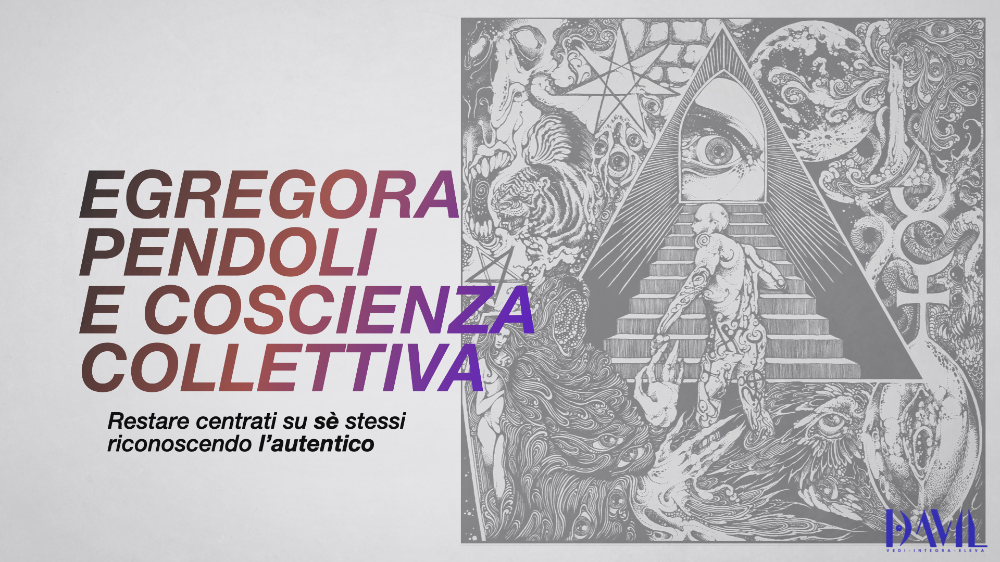
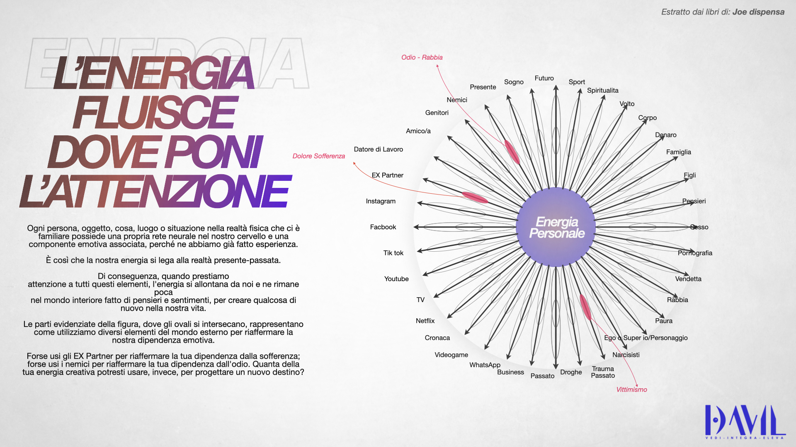
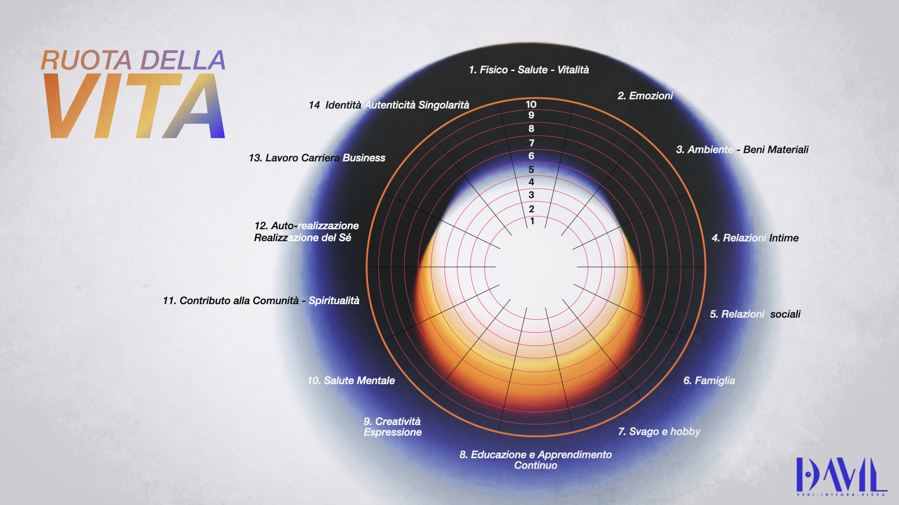
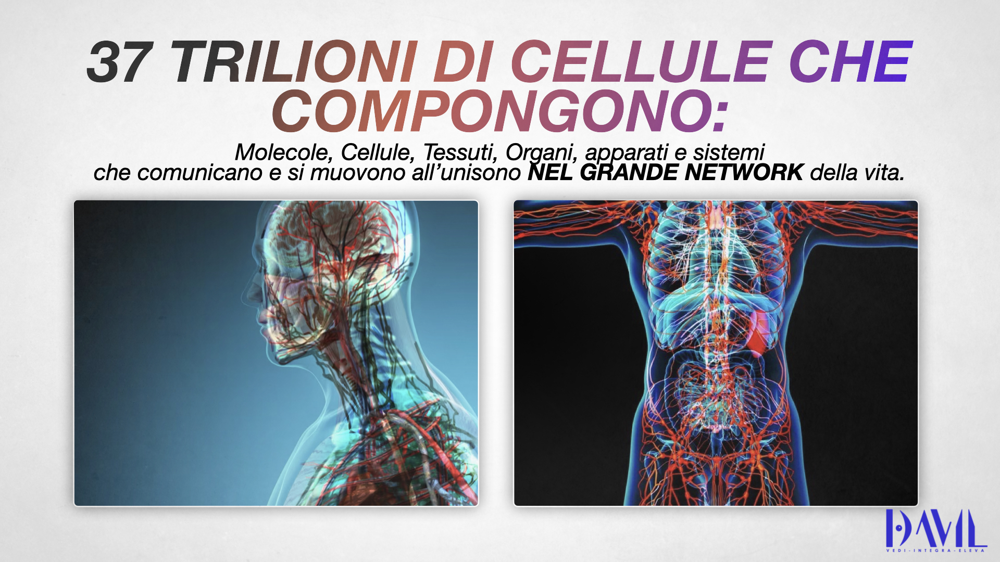
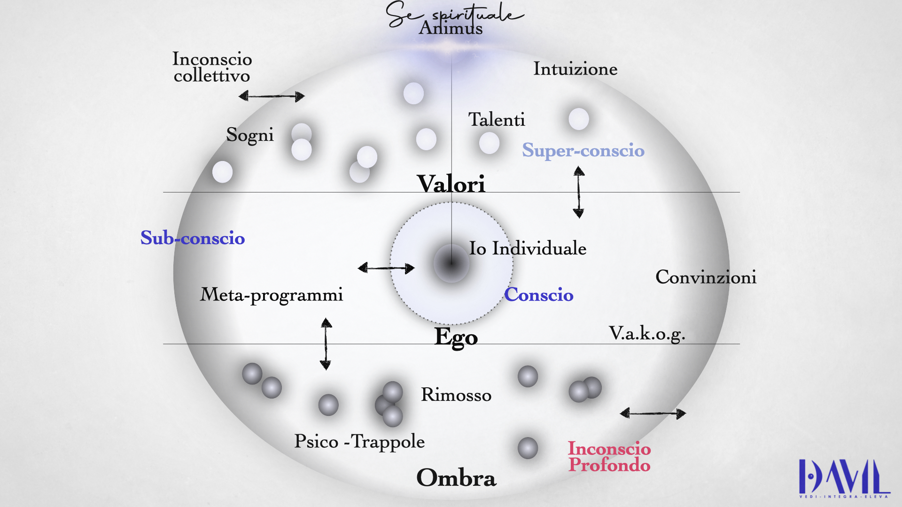
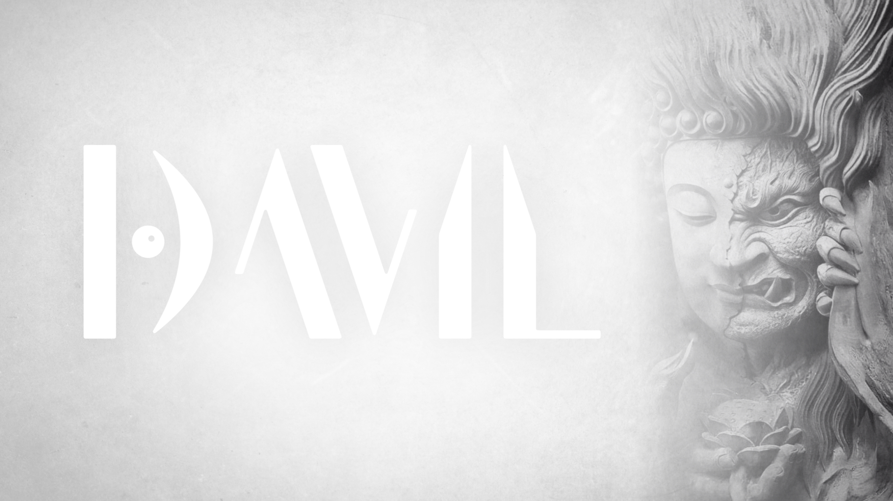
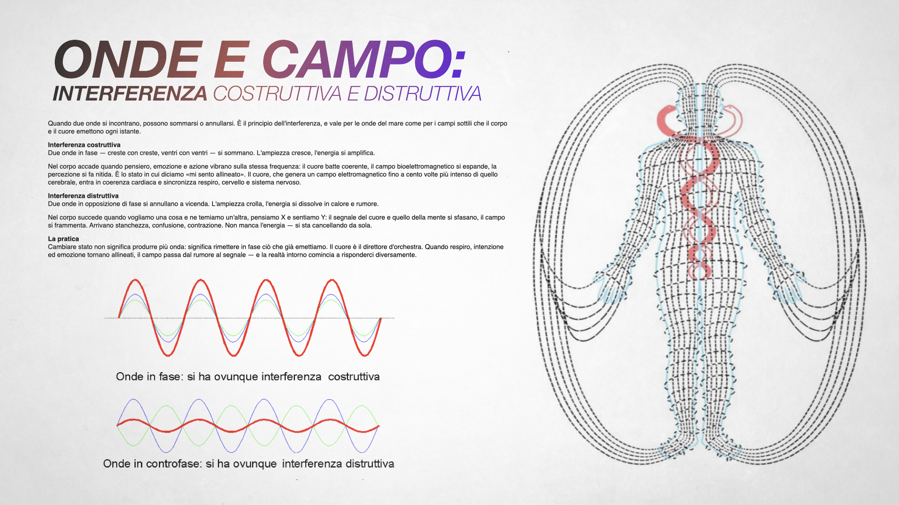
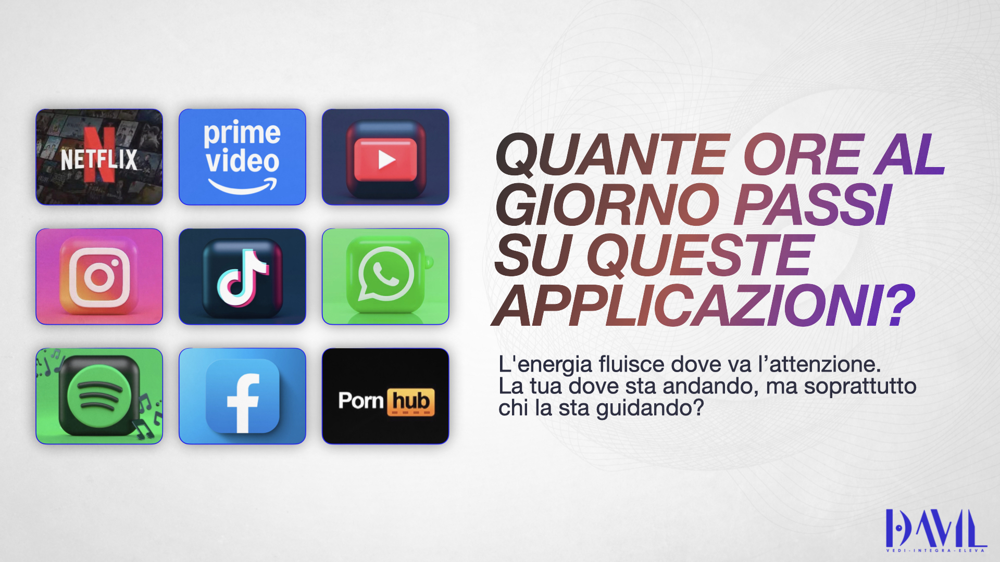
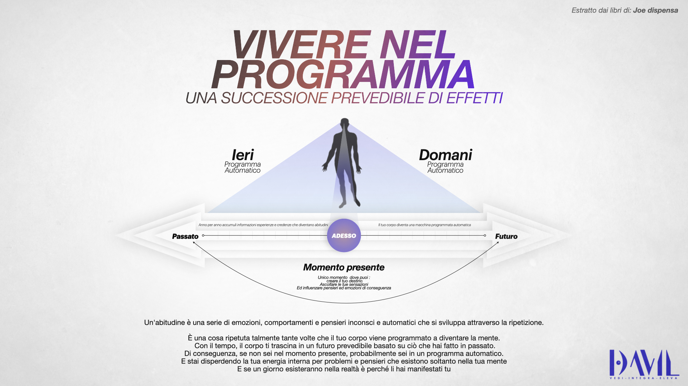

· Life Leadership & Coaching ·
Non hai bisogno di cambiare vita. Devi smettere di vivere quella di qualcun altro.
Per chi ha già costruito qualcosa e sente che la struttura interna non regge più ciò che ha fuori. Imprenditori, professionisti, persone in transizione profonda. Niente motivazione, niente formule veloci — solo la pazienza dell'orefice e la freddezza del chirurgo.
La realtà non è una linea. È un campo.
Tu non devi forzarla. Devi sintonizzarti.
Tutto il resto di questo sito serve a insegnarti come.
· Genesi del logo ·
Tre simboli, una proporzione.
Visione · Equilibrio · Crescita. Costruito sulla proporzione del 7 — il numero che torna nei pilastri, nei chakra, nei pianeti antichi, nelle note. Sotto, la genesi visiva.
Probabilmente sei arrivato qui così.
Hai costruito qualcosa che funziona — una carriera, un business, una relazione, una facciata — e dall'esterno non c'è niente da dire.
Dall'interno c'è una crepa che non chiude.
Hai già letto i libri. Hai provato la meditazione, il digiuno, la terapia, magari la psichedelica. Qualcuno ti ha promesso il salto di coscienza in sette giorni. Qualcun altro ti ha venduto un corso da diecimila euro e un attestato.
Niente di tutto questo è stato inutile. Niente di tutto questo è stato sufficiente.
Il motivo è semplice: nessuno ti ha insegnato a integrare. A tenere insieme la parte di te che legge Jung e la parte che firma contratti. La parte che cerca il Sé e la parte che deve pagare le bollette. La parte che sa e la parte che non riesce.
Io lavoro esattamente lì. Nel punto in cui le due metà si parlano.
Se sei arrivato fino a qui, la crepa è già una bocca che parla.
Scrivimi su WhatsAppDavil Di Claudio.
Civitavecchia, 1996 · Roma, oggi · Ricercatore della coscienza · Studioso di psicologia · Mental coach di professione
«A ventisei anni avevo tutto quello che sembra contare. A ventotto stavo piangendo nella macchina dei miei sogni mentre facevo shopping compulsivo. Era l'anima che presentava il conto.»
Tuta da meccanico prima dell'università. Porta a porta — luce e gas — quando ancora la gente apriva la porta. Reti commerciali in tre continenti, sede a Dubai. Sei milioni di dollari fatturati in un anno. Una proposta di matrimonio davanti a quindicimila persone, a una donna che non mi voleva sposare. Avevo vinto, secondo qualunque metro contemporaneo.
Poi è arrivato il crollo che non si scrive su LinkedIn. Il tipo di crollo dopo cui non sei più la stessa persona — e di cui, oggi, ringrazio. Da quel passaggio è uscito tutto il resto.
Mi alleno tre volte alla settimana in corsa, nuoto, ciclismo. Non per estetica. Perché il pensiero che non passa per il corpo non è pensiero, è ronzio. Leggo Jung da prima dei dieci anni — non perché fossi precoce, ma perché era l'unico libro in casa col dorso rovinato dall'essere riletto. La Psicosintesi di Assagioli mi ha trovato a ventitré. Il Transurfing di Zeland a ventisei. Sono i due strumenti che apro ogni giorno in sessione.
Ho scritto «Io posso farcela» e «PNL Esoterica» perché certe cose, se non le scrivi, le perdi. Studio anche ciò che le università non insegnano — alchimia interiore, archetipi attivi, leggi del campo. Non per posa esoterica. Perché senza quel piano metà di ciò che vedo nei clienti non avrebbe spiegazione.
Lavoro a tempo pieno e con poche persone alla volta. Non per arroganza. Per rispetto del tempo di tutti.
— Davil
Non motivazione. Ingegneria della coscienza.
Ogni percorso che guido si muove su tre assi simultanei. Saltarne uno significa costruire su sabbia.



La Ruota della Vita
Il primo strumento di diagnosi che apriamo insieme. Otto aree — corpo, lavoro, soldi, amore, famiglia, amici, evoluzione, divertimento — valutate da uno a dieci. Non per giudicarti. Per fotografare, in trenta minuti, dove sta perdendo aria la ruota della tua vita. Da qui parte il piano operativo dei tre assi.

Trentasette trilioni di cellule. Un'unica orchestra.
Non sei un solo soggetto. Sei un network interconnesso di organi, sistemi, microbioti, neuroni, ormoni, fasce, fluidi, archetipi e abitudini. Ogni cellula ascolta le altre. Ogni pensiero che ripeti diventa biologia.
Il lavoro che faccio non è "cambiare la mente". È far performare in armonia e sinergia tutte le parti di te — quelle che vedi e quelle che ti vivono dentro senza nome. Quando l'orchestra suona allineata, non devi più convincere la realtà di niente.
Quattro tradizioni. Un unico linguaggio operativo.
Non mischio le fonti per snobismo culturale. Le mischio perché, sul tavolo operativo di un percorso reale, ognuna di loro risolve qualcosa che le altre non vedono.

Psicosintesi — Roberto Assagioli
Non sei una cosa sola. E questo è il punto di partenza. Psichiatra veneziano, contemporaneo e poi critico di Freud: la sua mappa della psiche — l'ovoide, le subpersonalità, l'Io come centro di coscienza e volontà, il Sé transpersonale — dopo cent'anni regge ancora ogni prova clinica.
Nel mio metodo è lo strumento di lavoro quotidiano: così trasformiamo conflitti endopsichici in energia, disidentifichiamo il pensiero compulsivo, ricostruiamo un atto di volontà che non sia muscolo teso ma direzione chiara.
Transurfing — Vadim Zeland
La vita non si cambia. Si sceglie. Ventitré libri in ventun anni, un'unica intuizione: la realtà non è una linea, è un campo — lo spazio delle varianti — e tu non la costruisci, la selezioni.
Tre leggi pratiche che uso con ogni cliente: ciò a cui dai troppa importanza lo perdi; i pendoli (ideologie, social, gruppi, paure ereditate) si nutrono della tua attenzione; lo specchio della realtà non anticipa — riflette dopo.

PNL Esoterica — il metodo integrato
Programmare il magico chaos del mondo con le parole e non solo. È il titolo del mio secondo libro e la mia sintesi personale. La PNL classica è potente ma cieca sul livello archetipico. L'esoterismo è profondo ma scivoloso sul piano operativo.
Il mio lavoro: far dialogare i due piani. La parola come tecnologia psichica da un lato, gli archetipi come diagnostica dall'altro — Arconti, Eggregore, Pendoli, Guardiano della Soglia.

Leggi universali — risonanza, karma, vibrazione
Legge della Risonanza, del Riflesso, del Vuoto, della Compensazione, di Causa-Effetto, della Vibrazione, del Karma, dell'Amore, della Conoscenza. Non sono dogmi. Sono regolarità osservabili.
Bruce Lipton ha mostrato che le credenze modulano l'espressione genetica più della genetica stessa (epigenetica). Joe Dispenza ha documentato con EEG, HRV e risonanza magnetica funzionale come la meditazione ripetuta produca cambiamenti cerebrali misurabili in settimane. Quello che le tradizioni dicono da millenni — ciò che pensi diventa carne — la biologia lo sta semplicemente confermando.
Non lavoro con tutti. Con intenzione.
Per chi lavoro
- Imprenditori e professionisti che hanno costruito qualcosa e sentono che il costo interno sta superando il rendimento esterno.
- Persone in transizione profonda: separazione, lutto, crollo di identità, risveglio spirituale non richiesto.
- Leader di rete, manager, creator con responsabilità su altri, che sentono di non reggersi più su sé stessi.
- Chi ha già fatto terapia, ha capito molte cose, e vuole passare dalla comprensione alla trasformazione.
- Chi ha letto Jung, Assagioli o Zeland e vuole qualcuno con cui farci qualcosa.
Per chi non lavoro
- Chi cerca motivazione, hype, quote da mettere su Instagram.
- Chi vuole un guru che decida per lui.
- Chi non è disposto a rivedere la propria storia familiare.
- Chi crede che tre sessioni bastino a cambiare quindici anni di copioni.
- Chi cerca risultati senza esporsi, certezze senza verità.
Ti sei riconosciuto nella prima colonna? È il momento di muoversi.
Apriamo un canale direttoPercorsi su misura per chi è pronto.
-
01
Sessione di Esplorazione
Un primo incontro gratuito di trenta minuti per capire se c'è terreno comune. Nessun pitch. Nessuna vendita obbligata. Solo onestà e chiarezza. Alla fine ti dico cosa farei se fossi al tuo posto — anche se significa non lavorare insieme.
-
02

1:1 Leadership Coaching
Un percorso individuale a ciclo trimestrale. Sessioni settimanali per riallineare visione, energia e azione. Dodici settimane sono il tempo minimo perché qualcosa cambi davvero nei circuiti neurali, nelle abitudini, nel campo che emani.
Sessione zero di analisi · 12 sessioni settimanali da 60-75 min · protocollo operativo rivisto ogni 30 giorni · canale diretto fra le sessioni. -
03

Mentoring per chi parte da zero
Dedicato a chi vuole costruire un business proprio partendo da zero — imprenditori digitali, consulenti, freelance, professionisti in transizione. Posizionamento, disciplina interiore, gestione dell'energia, strategia di lungo termine. La mia scalata nel network marketing — fino a oltre 500.000 € di guadagni in pochi anni, partendo dalla tuta da meccanico — è il trampolino di lancio che porto in sessione: ti consegno la stessa struttura mentale e operativa che mi ha permesso di salire dalla porta a porta ai sei milioni di dollari fatturati. Non un caso fortunato. Un protocollo replicabile.
Positioning e voce di brand · ritmi e disciplina atletica applicati al business · gestione energetica della rete · strategia medio-lungo termine senza hype. -
04
Percorsi Evolutivi di Gruppo
Laboratori esperienziali dove il cambiamento è moltiplicato dal campo del gruppo. Teoria, pratica meditativa e strumenti di integrazione quotidiana. Piccoli numeri per garantire profondità: massimo otto persone per ciclo.
Cicli intensivi (weekend + follow-up online) con materiali scritti, esercizi guidati e gruppo privato di integrazione.
Hai visto il percorso che fa per te? Iniziamo dalla sessione di esplorazione gratuita.
Prenota la prima sessione
Smettere è l'ultimo passo, non il primo.
Fumo. Alcol. Droghe leggere e pesanti. Porno. Slot machine. Lo smartphone che controlli quaranta volte all'ora. I social che apri appena ti svegli, prima ancora di guardare in faccia tua moglie o tuo figlio.
Le chiamano dipendenze. Sono molto di più: sono pendoli energetici che si nutrono della tua attenzione e ti restituiscono una microdose di sollievo per non sentire ciò che dovresti sentire.
Per anni anche io ho usato sigarette e droghe per addormentare una rabbia che non sapevo nominare. So di cosa parlo dal di dentro, non dal manuale.
Le diete, gli sforzi di volontà, le app di meditazione e perfino la psicoterapia spesso falliscono con le dipendenze per una ragione sola: lavorano sul sintomo, non sulla chimica del campo.
Bruce Lipton la chiama programmazione subconscia. Joe Dispenza la chiama l'abitudine di essere te stesso. I nomi cambiano. Il meccanismo no.
Lavoro specificamente su
- Fumo — sigarette, tabacco sciolto, vape
- Alcol — uso ricorrente, anche "sociale"
- Droghe — cannabis, cocaina, MDMA, ketamina
- Porno e masturbazione compulsiva — perdita di funzionalità relazionale
- Smartphone e social media — scroll compulsivo, FOMO cronica
- Gioco d'azzardo e trading compulsivo
- Zucchero e food compulsion — dinamiche sovrapponibili a quelle di una sostanza
Quando indirizzo altrove: se la tua dipendenza è in fase acuta e richiede detossificazione medica (alcolismo avanzato, oppioidi, benzodiazepine senza supervisione), non lavoro da solo. Ti indirizzo a un servizio specialistico e, se vuoi, ti accompagno in parallelo sul piano psicologico ed energetico.
Percorso individuale di 90 giorni
Sessioni settimanali 1-a-1 in video · check-in giornaliero nelle prime due settimane · protocollo operativo personalizzato.
È il blocco più intenso che offro. Non è per chiunque. È per chi ha deciso.

Come ci sono arrivato.
«Mia madre voleva chiamarmi Devil. La gente mormorava, e lei ha cambiato una lettera. Eppure l'inferno l'ho attraversato lo stesso. E da lì sono risorto.»
-
CAPITOLO I
Civitavecchia, l'inizio senza padre
Sono nato nel 1996 da una madre di quattordici anni. Mio padre è stato un'assenza strutturale: l'ho incontrato poche volte, una birra in vita mia, un silenzio che ho passato anni a riempire con rumore. Ho imparato presto a vendere me stesso, perché non avevo altro da vendere.
-
CAPITOLO II
La fabbrica e il primo porta a porta
Perito meccanico, poi cinque anni in una fabbrica di Tarquinia. Nove ore al giorno a odiare un macchinario. La sera, compagnie sbagliate e droghe per addormentare la frustrazione. Il primo porta a porta di contratti luce e gas è arrivato come un respiro. Lì ho scoperto che le persone non mi spaventavano. E che avere in mano una conversazione era un potere.
-
CAPITOLO III
Dubai, i milioni, il crollo
Lyconet, poi Jeunesse, poi educazione finanziaria. Network manager, trasferimento a Dubai, una rete commerciale cresciuta a 3.000 persone attive. Sei milioni di dollari fatturati in un anno. Proposta di matrimonio davanti a 15.000 persone a una donna che non mi voleva sposare. Avevo vinto. Stavo piangendo nella macchina dei miei sogni mentre facevo shopping compulsivo. Non era depressione clinica. Era qualcosa di più antico: l'anima che presenta il conto.

-
CAPITOLO IV
La notte buia, la spiaggia, la voce
Sono tornato in Italia, ho mollato tutto. In una spiaggia, un pomeriggio che non dimenticherò, ho sentito — dentro, non fuori — una voce androgina chiedermi se volevo i poteri di un dio. Può essere stato un delirio. Può essere stata la ghiandola pineale. Può essere stato Jung che chiamava l'archetipo del Saggio. Non mi interessa il nome. Da quel giorno ho studiato quattro anni per capire cosa era successo.
-
CAPITOLO V
Oggi
Oggi aiuto altre persone a non perdere quindici anni come li ho persi io. Studio psicologia, continuo a scrivere, lavoro con meno clienti ma più a fondo. Non prometto di renderti felice. Ti insegno a smettere di vivere una vita altrui. Quello che ci fai, con una vita finalmente tua, è affar tuo.
Se questa storia ti ha toccato qualcosa, non è un caso.
Voglio iniziare il camminoDue libri. Due lati della stessa medaglia.
Io posso farcela
La guerra con i propri demoni raccontata senza filtri — Civitavecchia, la fabbrica, Dubai, il crollo, il ritorno. Le leggi universali lette non come dogmi ma come ciò che ho dovuto imparare nella carne per tornare in superficie.
Per chi ha bisogno di una storia vera prima di fidarsi di una tecnica.
→ Leggi il primo capitolo gratisPNL Esoterica
Un intreccio di psicologia clinica, neuroscienze, gnosi antica, alchimia interiore, Transurfing e linguistica operativa. Scritto per il ricercatore serio — quello che vuole capire come funziona davvero la macchina.
Per chi ha già letto Jung, Assagioli, Zeland e vuole vederli lavorare insieme.
→ Scarica l'introduzione + indiceInizia a lavorare prima ancora di parlare con me.
Tre strumenti pensati per darti valore reale da subito. Non anticipazioni, non teaser: cose che puoi usare, leggere, praticare, da oggi pomeriggio.
Ars Realis
Community italiana indipendente di studio e pratica del Reality Transurfing di Vadim Zeland. Non un gruppo Telegram di motivazione. Un laboratorio operativo.
- 52 settimane di percorso strutturato
- Tecniche a livelli — Base, Tecniche, Avanzate, Era Tafti
- Glossario con originali russi
- Diario personale privato
- Community indipendente — niente lignaggi
Interprete dei Sogni
Racconta un sogno. Ricevi una lettura stratificata — riformulazione, simboli, archetipi attivati, lettura compensatoria e prospettica, domande riflessive — basata sul corpus junghiano (Jung, Hillman, Neumann), sui metodi contemporanei (Johnson, von Franz, Bosnak, Aizenstat, Taylor) e sulle neuroscienze del sogno (Hobson, Solms).
La tua API key Anthropic resta nel tuo browser. Il sogno non viene registrato.
Per un lavoro profondo considera un analista o un coaching dedicato. Questo tool apre la porta. Non è la casa.
→ Apri l'interpretePsicosintesi · Il compendio
Un compendio scritto in prima persona: il mio riassunto ordinato, narrativo, leggibile del patrimonio custodito in psicoenergetica.it — scritti di Roberto Assagioli, Viglienghi, Bartoli.
- 38 capitoli, 10 parti
- Glossario ragionato
- Bibliografia essenziale
Se vuoi capire come lavoro, la Psicosintesi è il sistema operativo sotto il cofano — ti tocca capirla.
Queste tre risorse non sono esche. Sono il filtro: se ti sono utili, stiamo probabilmente cercando la stessa cosa. Se non ti toccano niente, significa che il mio percorso non fa per te — ed è perfetto così.
Domande che tornano.
Sei un terapeuta?
Questo "Transurfing" è un'altra roba new-age?
Quanto dura un percorso?
Lavori solo a Roma o anche online?
Che garanzie dai?
Ho già fatto terapia. A cosa mi serve un coach?
Posso liberarmi dal fumo/alcol/porno/smartphone davvero in 90 giorni?
Ho già provato con uno psicologo / un centro per le dipendenze. Perché dovrebbe funzionare con te?
Cos'è Ars Realis e come ci si iscrive?
Devo credere a Jung o al Transurfing per lavorare con te?
Se sei arrivato fin qui, una parte di te ha già deciso.
L'altra vuole solo essere rassicurata. Prenota una chiamata. È gratis. Dura trenta minuti. Decidi dopo.
Prenota la chiamata conoscitivaDove mi trovi.
Roma, Italia · 70% dei percorsi 1:1 online · Aziende e team: in tutta Italia